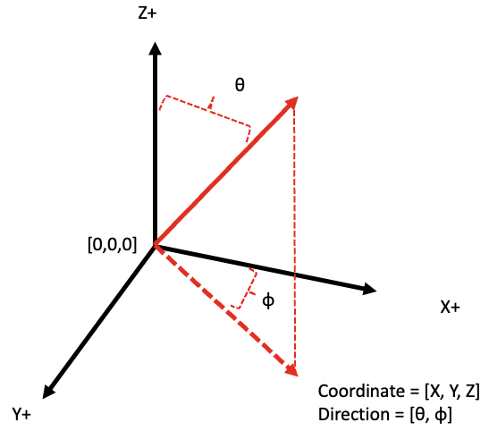

Overview
T-Mart: Topography-adjusted Monte-carlo Adjacency-effect Radiative Transfer Code
T-Mart solves the radiative transfer in a 3D surface-atmosphere system through a Monte-Carlo approach. T-Mart features arbitrary surface models which allow simulations of the adjacnecy effect in aquatic remote sensing.
In addition to the radiative transfer solver, there are three components in the code: atmosphere, water and land:
The atmosphere consists of layers with various scattering and absorbing properties and shares the same atmosphere and aerosol databases with 6S.
Land is treated as Lambertian. The topography of land is modelled by triangulating the pixels of an input DEM.
Water has three components: 1) water-leaving reflectance, 2) white-caps and 3) glint reflectance. 1 and 2 are assumed to be Lambertian, 3 is calculated through Cox-Munk slope statistics.
Many of T-Mart’s input are from Py6S. Users are assumed to have basic understanding of numpy arrays and radiative transfer.
Home page: https://github.com/yulunwu8/tmart
Yulun Wu | April 2, 2023 | yulunwu8@gmail.com
Publication
Wu, Y., Knudby, A., & Lapen, D. (2023). Topography-Adjusted Monte Carlo Simulation of the Adjacency Effect in Remote Sensing of Coastal and Inland Waters. Journal of Quantitative Spectroscopy and Radiative Transfer, 108589. https://doi.org/10.1016/j.jqsrt.2023.108589
Required Libraries
T-Mart is written in Python 3, and it requires Py6S, numpy, pandas, scipy, pathos, matplotlib, and netCDF4.
Installation
1 - Create a conda environment and activate it:
conda create --name tmart python=3.9
conda activate tmart
2 - Install dependencies:
conda install -c conda-forge Py6S
Here the wait time may take up to twenty minutes because some packages require specific versions of dependencies.
3 - Install tmart:
pip3 install tmart
Input
Essential inputs
Wavelength: wavelength in nm.
Surface:
DEM: Digital Elevation Model, the elevation of pixels in a run.
Cell size: the width and length of each pixel.
Reflectance: reflectance of land or water-leaving reflectance of water, assumed to be Lambertian.
is_water: specify which pixels are water pixels.
Background information: the elevation and reflectance of the background beyond the range of the pixels.
Atmosphere profile: choose from Py6S.
n_photon: number of photons used in each run, default 10,000. A greater value (e.g., 100,000) makes the run slower but with higher accuracy.
Geometry: photon starting position, solar angle, viewing angle.
Optional inputs
Atmosphere:
AOT550: aerosol optical thickness at 550nm.
Aerosol model: choose from Py6S
Aerosol scale height: default 2 km.
n_layers: number of atmospheric layers: default 10. Having more layers may slightly increases the computation time
Water:
Wind: wind speed and direction
Water salinity: in unit of parts per thousand, default 0.
Water temperature: in Celsius, default 25.
Geometry
The geometry in T-Mart follows the diagram below.

Output
Reflectances (definitions following 6S):
Atmospheric intrinsic reflectance
Environmental reflectance
Direct reflectance
Environmental and direct reflectances can be further divided into contributions from water-leaving, water-specular, water-whitecap and land reflectances.